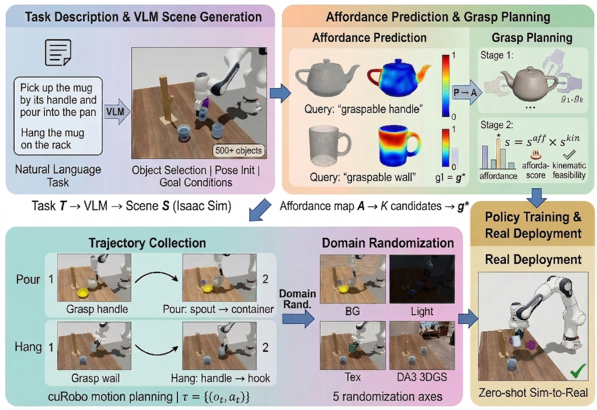
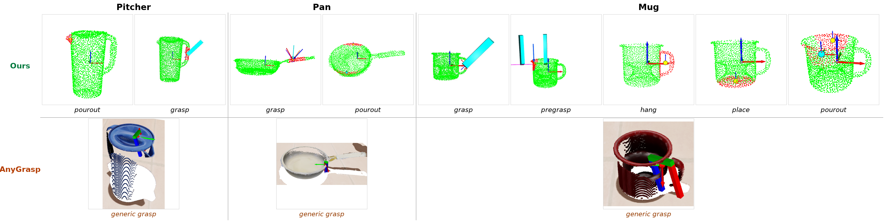
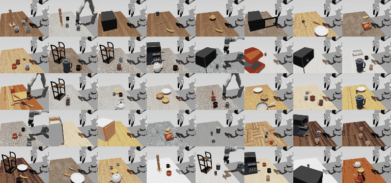
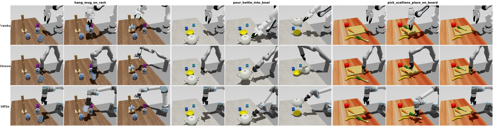

Abstract
Simulation-based data generation has become a dominant paradigm for training robotic manipulation policies, yet existing platforms do not incorporate object affordance information into trajectory generation. As a result, tasks requiring precise interaction with specific functional regions — grasping a mug by its handle, pouring from a cup's rim, or hanging a mug on a hook — cannot be automatically generated with semantically correct trajectories. We introduce AffordSim, the first simulation framework that integrates open-vocabulary 3D affordance prediction into the manipulation data generation pipeline. AffordSim uses our VoxAfford model, an open-vocabulary 3D affordance detector that enhances MLLM output tokens with multi-scale geometric features, to predict affordance maps on object point clouds, guiding grasp pose estimation toward task-relevant functional regions. Built on NVIDIA Isaac Sim with cross-embodiment support (Franka FR3, Panda, UR5e, Kinova), VLM-powered task generation, and novel domain randomization using DA3-based 3D Gaussian reconstruction from real photographs, AffordSim enables automated, scalable generation of affordance-aware manipulation data. We establish a benchmark of 50 tasks across 7 categories (grasping, placing, stacking, pushing/pulling, pouring, mug hanging, long-horizon composite) and evaluate 4 imitation learning baselines (BC, Diffusion Policy, ACT, Pi 0.5). Our results reveal that while grasping is largely solved (53–93% success), affordance-demanding tasks such as pouring into narrow containers (1–43%) and mug hanging (0–47%) remain significantly more challenging for current imitation learning methods, highlighting the need for affordance-aware data generation. Zero-shot sim-to-real experiments on a real Franka FR3 validate the transferability of the generated data.
System Overview

Figure 1: Overview of AffordSim. Natural language task descriptions are processed by a VLM to generate simulation scenes in Isaac Sim. VoxAfford predicts 3D affordance maps on object point clouds, guiding grasp pose estimation and motion planning to produce semantically correct manipulation trajectories. Comprehensive domain randomization, including DA3-reconstructed real backgrounds, enables zero-shot sim-to-real transfer.
The AffordSim pipeline consists of five stages: (1) A VLM converts the natural language task description into a scene configuration, specifying objects, their poses, the robot embodiment, and goal conditions. (2) For each target object, a point cloud is captured from the simulation scene. (3) VoxAfford predicts an affordance map, where each point's value indicates the suitability of that surface point for the specified interaction. (4) Affordance-guided grasp pose estimation selects a grasp from the affordance-weighted candidate set. (5) A motion planner generates and executes a collision-free trajectory, and domain randomization is applied to the rendered observations.
Why Affordance-Aware Manipulation?
Object affordances — the functional regions through which objects are meant to be manipulated — are critical for tasks requiring precise, semantically correct interactions. Pouring from a cup requires grasping its handle and tilting from the rim; hanging a mug demands locating the hook-compatible opening. Current simulation platforms handle grasp pose estimation through one of two approaches, both of which fail for affordance-demanding tasks:
- Manual grasp design requires human engineers to hand-specify grasp poses for each object and task, which is labor-intensive and does not scale.
- Generic grasp estimation methods such as AnyGrasp predict stable grasps without considering task semantics, often selecting poses that are physically stable but functionally incorrect (e.g., grasping a mug by its body when the task requires pouring).
In our experiments, affordance-demanding tasks such as mug hanging achieve at most 10% policy success when trajectories are generated with generic grasp methods, compared to meaningful improvements with affordance guidance. VoxAfford (61% average) substantially outperforms AnyGrasp (20%), demonstrating the value of learned affordance guidance.

Figure 2: Affordance-guided grasp planning vs. generic grasp estimation. VoxAfford predicts 3D affordance heatmaps on object point clouds, enabling grasp pose selection that targets task-relevant functional regions (e.g., grasping a mug by its handle for pouring, or by its rim opening for hanging).
50-Task Benchmark
AffordSim includes a benchmark of 50 tasks organized into 7 manipulation categories of increasing affordance complexity. Each task is evaluated with 30 simulation rollouts, and the primary metric is task success rate (SR). For multi-step tasks, sub-task success rates are additionally reported to localize failure modes.
| Category | Tasks | Description & Key Affordance |
|---|---|---|
| Grasping | 10 | Pick up objects with varied geometries. Requires graspable-surface affordance. |
| Placing | 10 | Pick and place objects onto surfaces or into containers. Requires release-point affordance. |
| Stacking | 5 | Stack objects in specified orders. Requires stable-surface affordance and sequencing. |
| Pushing / Pulling | 6 | Push objects to targets or pull open drawers and doors. Requires contact-surface affordance. |
| Pouring | 8 | Pour contents between containers of varying geometry. Requires rim affordance and tilt control. |
| Mug Hanging | 3 | Hang mugs on racks or hooks. Requires handle-opening affordance and precise alignment. |
| Long-Horizon Composite | 8 | Multi-step tasks chaining primitives across categories (e.g., pick-pour-place). Requires sequential affordance reasoning. |

Figure 3: Task gallery. Representative tasks from the AffordSim benchmark across seven manipulation categories: grasping, placing, stacking, pushing/pulling, pouring, mug hanging, and long-horizon composite tasks.
Domain Randomization & Cross-Embodiment
To close the visual gap between simulation and the real world, AffordSim applies domain randomization along five axes: (1) Background texture — random textures on workspace and surrounding surfaces; (2) Lighting — randomized number, position, intensity, and color of light sources; (3) Object texture — PBR material property perturbation (albedo, roughness, metallicity); (4) Object pose — small random perturbations to initial positions and orientations; (5) DA3 Gaussian background — photorealistic backgrounds from 3D Gaussian Splatting reconstruction of real deployment scenes using 10–20 photographs.

Figure 4: Domain randomization in AffordSim. Each column shows the cumulative effect of adding one randomization axis: object pose, lighting, background texture, and image noise. The rightmost column shows example background textures used for randomization.
AffordSim supports 4 robot embodiments — Franka FR3, Franka Panda, UR5e, and Kinova — with automatic kinematic adaptation. The VoxAfford affordance module is embodiment-agnostic; no task-specific tuning is required when switching between robots.

Figure 5: Cross-embodiment support. Three representative tasks executed by four robot embodiments. AffordSim generates affordance-guided trajectories for each embodiment without task-specific tuning.
Cross-Embodiment Trajectory Generation
We evaluate trajectory generation success across four robot embodiments on 10 representative tasks. AffordSim successfully generates affordance-guided trajectories for all embodiments. The variation in success rates reflects kinematic differences rather than affordance prediction failures, as VoxAfford is embodiment-agnostic. Notably, the UR5e exhibits lower success on orientation-sensitive tasks such as pouring, because its 6-DOF kinematics (versus 7-DOF for the other arms) limits wrist dexterity.
| Robot Embodiment | Trajectory Generation Success Rate | |
|---|---|---|
| Franka FR3 | 94% | |
| Franka Panda | 92% | |
| UR5e | 83% | |
| Kinova | 95% | |
Simulation Benchmark Results
Each task is trained on 300 demonstrations with object pose randomization applied during data collection; all evaluation rollouts also include object pose randomization to test generalization. We evaluate four imitation learning baselines: BC (behavioral cloning with an MLP policy), Diffusion Policy (DP), ACT (Action Chunking Transformers), and Pi 0.5. All policies use dual-view RGB images and robot proprioceptive state as input.
| Category | Task | BC | ACT | DP | Pi 0.5 |
|---|---|---|---|---|---|
| Grasping | pick_banana | 53 | 63 | 87 | 93 |
| pick_red_cup | 17 | 77 | 63 | 80 | |
| Placing | pick_banana_place_plate | 37 | 60 | 84 | 93 |
| pick_cup_place_shelf | 5 | 7 | 3 | 47 | |
| pick_kettle_place_coffee_machine | 27 | 43 | 49 | 65 | |
| Stacking | stack_two_blocks | 30 | 43 | 47 | 77 |
| stack_three_blocks | 13 | 27 | 28 | 53 | |
| Push/Pull | push_box_to_target | 23 | 63 | 67 | 78 |
| pull_drawer_open | 37 | 53 | 58 | 86 | |
| Pouring | pour_basket_into_bowl | 20 | 86 | 94 | 99 |
| pour_pan_into_bowl | 7 | 33 | 87 | 92 | |
| pour_cup_into_bowl | 1 | 24 | 36 | 43 | |
| Mug Hanging | hang_mug_on_rack | 0 | 10 | 17 | 47 |
| hang_mug_on_hook | 0 | 7 | 13 | 33 | |
| Long Horizon | pick_cup_pour_place_coffee_machine | 0 | 3 | 8 | 16 |
| pick_cup_pour_hang_on_rack | 0 | 1 | 3 | 21 | |
| open_microwave_place_can | 0 | 0 | 2 | 13 | |
| Average (all 17 tasks) | 16 | 35 | 44 | 61 | |
Affordance Integration Ablation
We compare four grasp strategies on affordance-demanding tasks: Manual (human-specified), AnyGrasp (generic grasp estimation), VoxAfford (our predicted affordance guidance), and Human Aff. (human-annotated affordance ground truth, serving as an oracle upper bound).
| Task | Manual | AnyGrasp | VoxAfford | Human Aff. |
|---|---|---|---|---|
| pick_banana_place_plate | 100 | 47 | 98 | 100 |
| pour_into_pan | 67 | 20 | 80 | 93 |
| pour_into_cup | 83 | 0 | 63 | 80 |
| hang_mug_on_rack | 87 | 0 | 10 | 90 |
| hang_mug_on_hook | 83 | 0 | 17 | 87 |
| pick_screwdriver | 100 | 53 | 97 | 100 |
| Average | 87 | 20 | 61 | 92 |
Zero-Shot Sim-to-Real Transfer
We deploy Pi 0.5 trained exclusively on AffordSim data to a real Franka FR3, evaluating on one representative task from each category. The sim-to-real transfer success rate mirrors the affordance-complexity gradient observed in simulation: grasping achieves 60%, placing 30%, push/pull 40%, and stacking 20%, while pouring (20%) and mug hanging (10%) remain challenging. These results confirm that (1) AffordSim-generated data supports effective sim-to-real transfer, and (2) the affordance-complexity bottleneck is not an artifact of simulation but reflects genuine difficulty in learning fine-grained functional interactions.
| Category | Task | SR (%) |
|---|---|---|
| Grasping | pick_banana | 60 |
| Placing | pick_cup_place_shelf | 30 |
| Stacking | stack_two_blocks | 20 |
| Push/Pull | push_box_to_target | 40 |
| Pouring | pour_into_pan | 20 |
| Mug Hanging | hang_mug_on_rack | 10 |
| Average | 30 | |